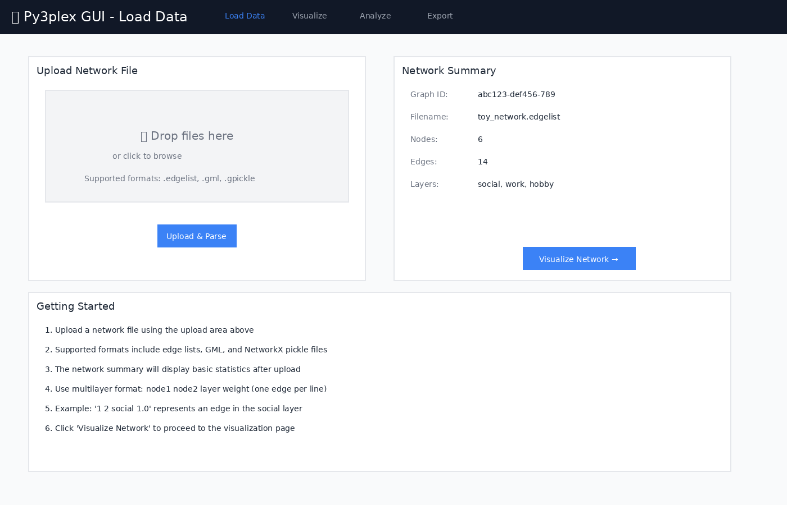
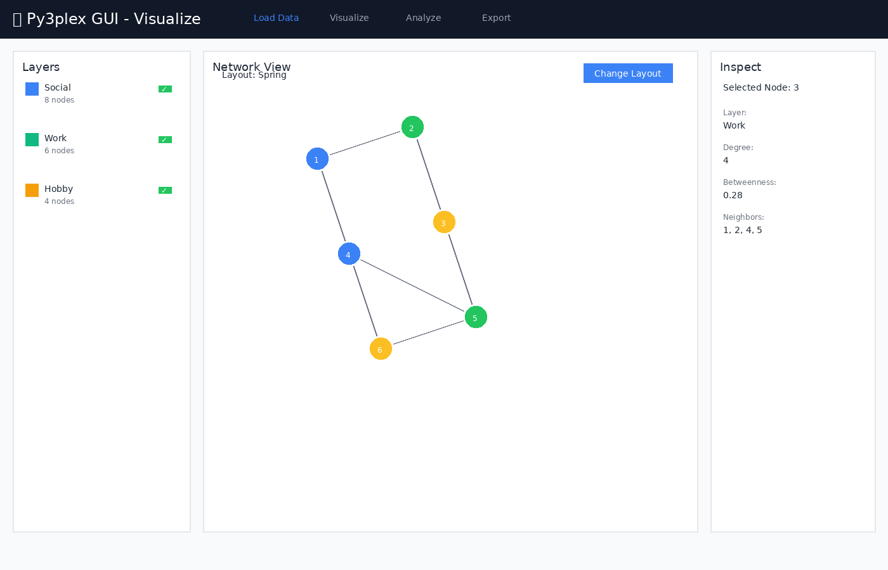
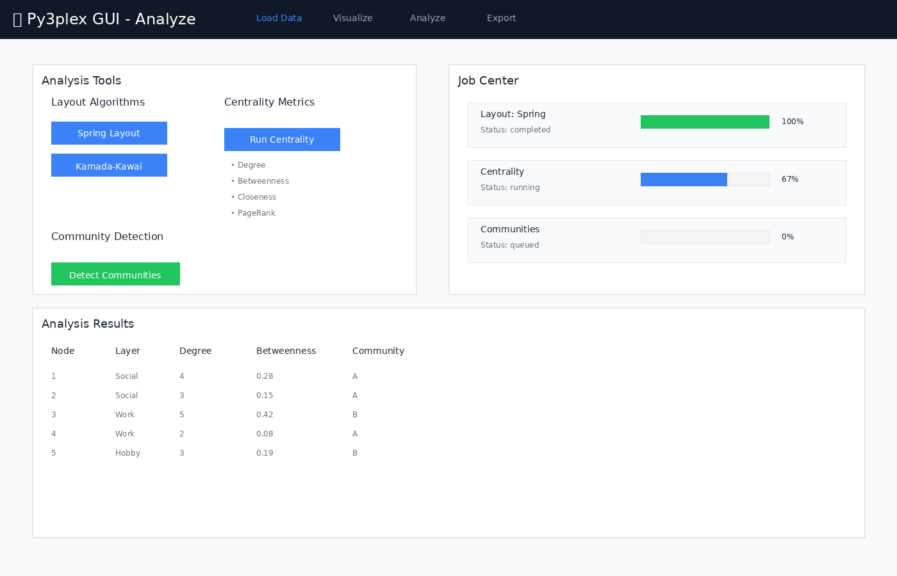
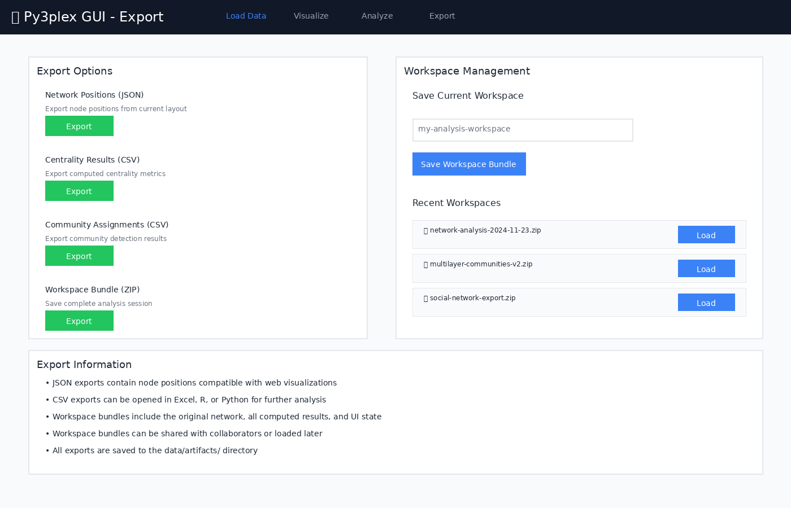
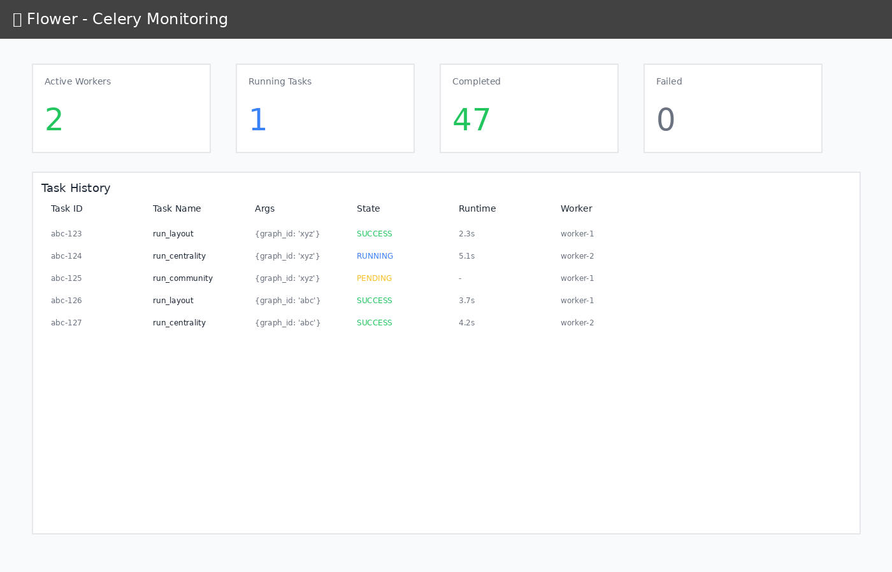

Py3plex GUI
A production-ready web-based GUI for py3plex multilayer network analysis, running locally via Docker Compose. Upload multilayer graphs, explore them visually, and run common analytics from your browser.
Visual Overview
The Py3plex GUI provides an intuitive web interface for multilayer network analysis. Below are screenshots of the main interface pages:
{kind=link}

Figure 1: Load Data page for uploading network files in various formats
Prerequisites
Docker (>= 20.10)
Docker Compose (>= 2.0)
4GB RAM minimum
Ports available: 8080 (GUI), 5555 (Flower), 8000 (API), 6379 (Redis)
Quickstart
Use this sequence after the prerequisites above are installed and ports are free:
# Navigate to the gui directory
cd gui
# Copy environment configuration
cp .env.example .env
# Start all services (builds automatically)
make up
# Open in browser
# Application: http://localhost:8080
# Data Job Monitor (Flower): http://localhost:5555
First time? The build takes ~3-5 minutes. Subsequent starts are instant.
Wait for containers to report healthy before using the UI.
That’s it! The application will be running with:
React + TypeScript frontend with hot reload
FastAPI backend with py3plex integration
Celery workers for async jobs
Redis broker
Nginx reverse proxy
Architecture
┌─────────────────────────────────────────────────────────────┐
│ Nginx (Port 8080) │
│ Reverse Proxy + Static Serving │
└───────┬────────────────────────┬────────────────────────────┘
│ │
▼ ▼
┌──────────────┐ ┌──────────────────────┐
│ Frontend │ │ FastAPI │
│ React + Vite │ │ (Port 8000) │
│ (Dev HMR) │ │ py3plex wrapper │
└──────────────┘ └──────────┬───────────┘
│
┌───────────────┴────────────────┐
▼ ▼
┌──────────────┐ ┌──────────────┐
│ Redis │ │ Celery │
│ (Port 6379) │◄──────────────│ Worker │
│ Broker │ │ + Flower │
└──────────────┘ └──────────────┘
│
▼
┌──────────────────────────────────┐
│ Shared Volume: /data │
│ - uploads/ │
│ - artifacts/ │
│ - workspaces/ │
└──────────────────────────────────┘
Key Components:
Frontend: React 18 + Vite + TypeScript + Tailwind CSS
API: FastAPI (Python 3.12) with py3plex integration
Worker: Celery for long-running analysis jobs
Broker: Redis for job queue
Proxy: Nginx for unified access
Monitoring: Flower dashboard for job inspection
Features
Data Loading
Upload network files (.edgelist, .txt, .gml, .gpickle)
Automatic format detection
Multilayer network support
Real-time file preview
Visualization
{kind=link}

Figure 2: Network visualization with layer controls and node inspection panel
Features:
Layer-centric view
Interactive node/edge inspection
Configurable layouts
Position caching
Analysis (Async via Celery)
{kind=link}

Figure 3: Analysis page with job controls and real-time progress tracking
Available Analysis Tools:
Layouts: Spring, Kamada-Kawai, Circular, Random
Centrality: Degree, Betweenness, Closeness, Eigenvector, PageRank
Community Detection: Louvain, Label Propagation, Greedy Modularity
Real-time progress tracking
Result caching
Export
{kind=link}

Figure 4: Export page for saving analysis results and workspace bundles
Export Options:
CSV summaries (centrality, communities)
JSON position data
PNG snapshots (planned)
Workspace bundles (data + state + results)
Workspace Bundles
Save and restore complete analysis sessions. A bundle includes:
Original network file
Computed layouts
Centrality results
Community assignments
UI view state
Export a bundle from the Export page and re-import it later to restore the exact session state.
Job Monitoring
The GUI includes Flower dashboard for real-time monitoring of background jobs:
{kind=link}

Figure 5: Flower dashboard showing task history and worker status
Monitoring Features:
Track task execution in real-time
View worker status and performance
Inspect task history and results
Monitor task queue and completion rates
Access at http://localhost:5555 when running
Development Guide
Project Structure
gui/
├── docker-compose.yml # Main orchestration
├── compose.gpu.yml # GPU override (optional)
├── Makefile # Convenience commands
├── .env.example # Configuration template
├── nginx/
│ └── nginx.conf # Reverse proxy config
├── api/
│ ├── Dockerfile.api # API container
│ ├── pyproject.toml # Python dependencies
│ └── app/
│ ├── main.py # FastAPI app
│ ├── schemas.py # Pydantic models
│ ├── deps.py # DI & config
│ ├── routes/ # API endpoints
│ ├── services/ # Business logic (py3plex wrappers)
│ ├── workers/ # Celery tasks
│ └── utils/ # Helpers
├── worker/
│ └── Dockerfile # Worker container
├── frontend/
│ ├── Dockerfile.frontend # Frontend container
│ ├── package.json # Node dependencies
│ ├── vite.config.ts # Vite config
│ └── src/
│ ├── App.tsx # Root component
│ ├── lib/api.ts # API client
│ ├── pages/ # Page components
│ └── components/ # Reusable components
└── data/ # Shared volume (gitignored)
├── uploads/
├── artifacts/
└── workspaces/
Makefile Commands
make setup # Copy .env.example to .env
make up # Start all services (build if needed)
make down # Stop and remove containers + volumes
make restart # Restart all services
make build # Rebuild Docker images
make logs # Tail logs from all services
# Development helpers
make bash-api # Shell into API container
make bash-worker # Shell into worker container
make bash-frontend # Shell into frontend container
# Testing
make test-api # Run API tests
make e2e # Run end-to-end tests (WIP)
# Cleanup
make clean # Remove containers, volumes, and data
Local Development Against py3plex
The py3plex repository root is bind-mounted read-only into containers at /workspace:
# In Dockerfile.api
ARG PY3PLEX_PATH=/workspace
RUN pip install -e ${PY3PLEX_PATH}
Benefits:
Changes to py3plex core reflect immediately (no rebuild)
Editable install for development
Isolated GUI code under
gui/
Note: The mount is read-only to prevent accidental writes from containers.
Configuration
Environment Variables (.env)
# API
API_WORKERS=2 # Uvicorn workers
MAX_UPLOAD_MB=512 # Max file size
# Celery
CELERY_CONCURRENCY=2 # Worker threads
REDIS_URL=redis://redis:6379/0
# Frontend
VITE_API_URL=http://localhost:8080/api
GPU Support (Optional)
Enable NVIDIA GPU acceleration:
docker compose -f docker-compose.yml -f compose.gpu.yml up
Requirements:
NVIDIA Docker runtime installed
CUDA-compatible GPU
Data Formats
Accepted Input Formats
1. Edge List (.edgelist, .txt)
# Multilayer format: node1 node2 layer weight
1 2 social 1.0
1 3 work 1.0
2 3 hobby 0.5
# Simple format: node1 node2
A B
B C
C D
Use whitespace-separated columns. Include the layer column for multilayer graphs; omit it for single-layer files. Weights are optional and default to 1.0 if absent.
2. GML (.gml)
Graph Modeling Language
Preserves attributes and metadata
3. NetworkX Pickle (.gpickle)
Native NetworkX serialization
Fastest for large graphs
Example Dataset
Try the included toy network (6 nodes, 14 edges, 3 layers):
# From host
curl -F "file=@gui/toy_network.edgelist" http://localhost:8080/api/upload
# Or use the Web UI at http://localhost:8080
Testing
Continuous Integration
GUI tests run automatically on GitHub Actions for any changes to the gui/ directory. Pushes and pull requests that touch GUI files trigger the workflow:
# Workflow: .github/workflows/gui-tests.yml
- API unit tests (pytest)
- Integration tests (Docker Compose)
- Frontend build verification
Status:
Tests include:
Health endpoint validation
File upload with toy network
Layout job execution and completion
Centrality computation
Service health checks
API Tests
# Run inside API container
make bash-api
pytest ci/api-tests/ -v
# Or directly
docker compose exec api pytest ci/api-tests/ -v
Integration Tests
The CI workflow runs full integration tests (Docker Compose brings up the full stack and exercises uploads + analysis):
# With the stack running (`make up`):
cd gui
# Upload the sample network
curl -F "file=@toy_network.edgelist" http://localhost:8080/api/upload
# Kick off layout, centrality, and community detection jobs
# Verify each job reaches status=completed and returns results
Frontend Tests (WIP)
# Playwright smoke tests
make e2e
Manual Testing Workflow
For a step-by-step manual checklist, see docfiles/gui/gui_testing.rst. Quick smoke flow:
Upload
toy_network.edgelistvia Web UIVisualize the network (expect 6 nodes, 14 edges, 3 layers)
Analyze:
Run Spring Layout
Compute Centrality (degree + betweenness)
Detect Communities (Louvain)
Monitor jobs at http://localhost:5555 (Flower) and confirm they transition to
completedwithout errorsExport workspace bundle
Production Deployment
Static Build (Recommended)
For production, serve pre-built frontend assets instead of the Vite dev server:
# Modify Dockerfile.frontend to use multi-stage build
FROM node:20-alpine AS builder
WORKDIR /app
COPY frontend/ .
RUN npm install && npm run build
FROM nginx:alpine
COPY --from=builder /app/dist /usr/share/nginx/html
COPY nginx/nginx.conf /etc/nginx/nginx.conf
Update docker-compose.yml:
frontend:
build:
context: .
dockerfile: Dockerfile.frontend.prod
# Remove dev server volume mounts
Security Considerations
Set
CORS allow_originsto specific domains (not*)Add authentication/authorization middleware
Use HTTPS (add TLS termination in Nginx)
Validate file uploads strictly
Set resource limits per user/job
Enable Celery task rate limiting
Current Status: Development mode - suitable for local use only. Do not expose to the public internet without proper security hardening.
Troubleshooting
Issue: Port already in use
# Find process using port 8080
lsof -ti:8080 | xargs -r kill
# Or change port in docker-compose.yml
ports:
- "8081:80" # Use 8081 instead
Issue: Permission denied on /data
# Fix volume permissions
sudo chown -R $(whoami):$(whoami) gui/data/
Issue: py3plex import error in containers
# Verify mount
docker compose exec api ls -la /workspace
# Reinstall if needed
docker compose exec api pip install -e /workspace
Issue: Frontend can’t reach API
Check Nginx proxy config:
docker compose exec nginx cat /etc/nginx/nginx.conf
# Test API directly
curl http://localhost:8000/api/health
API Documentation
Interactive docs available at:
Swagger UI: http://localhost:8080/api/docs
Key Endpoints
POST /api/upload # Upload network file
GET /api/graphs/{id}/summary # Graph statistics
POST /api/graphs/{id}/layout # Compute layout (async)
POST /api/graphs/{id}/analysis/centrality # Compute centrality (async)
POST /api/graphs/{id}/analysis/community # Detect communities (async)
GET /api/jobs/{id} # Poll job status
POST /api/workspaces/save # Save workspace bundle
Example: Run Analysis
# 1. Upload
GRAPH_ID=$(curl -F "file=@toy_network.edgelist" \
http://localhost:8080/api/upload | jq -r .graph_id)
# 2. Start layout job
JOB_ID=$(curl -X POST \
-H "Content-Type: application/json" \
-d '{"algorithm":"spring","seed":42,"dimensions":2}' \
http://localhost:8080/api/graphs/$GRAPH_ID/layout | jq -r .job_id)
# 3. Poll job
curl http://localhost:8080/api/jobs/$JOB_ID
# 4. Get positions
curl http://localhost:8080/api/graphs/$GRAPH_ID/positions
Contributing
This GUI is part of the py3plex project.
Guidelines:
Keep all GUI code under
gui/Do not modify py3plex core
Follow existing code style (Black, Ruff for Python; ESLint for TypeScript)
Add tests for new features
Update documentation with new features
License
This GUI follows the py3plex repository license:
GUI code (under
gui/): BSD-3-Clause (same as py3plex)Dependencies: See individual package licenses
Acknowledgments
Built with:
Support
py3plex Paper: Applied Network Science 2019